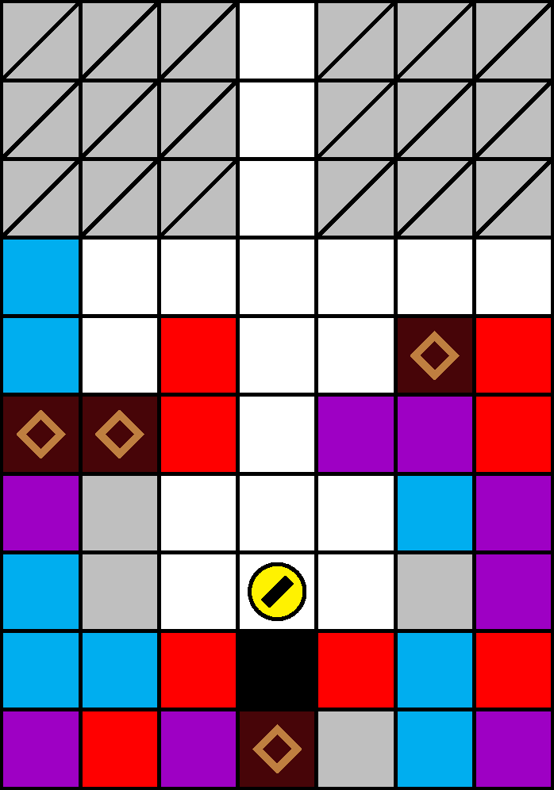

一般指針
愚形・下回り

指針
水平移動先上方に位置するブロックの種類・落下予定性・落下猶予は，常に確認または計算します．危険と思われるか状況が判然としない座標へは，移動しません．
解説
「鉄則・落下は常に計算する」も参照してください．
上方の安定が確保されている水平位置から左右へ移動すると，一般に圧迫のリスクが生じます．左右へ移動する場合は，その上方の状況を確認または計算し，不測の圧迫を可能な限り避けます．忘れるなどして上方の状況が不明な場合は，よりブロックが落下してくる可能性の低い列を計算し，そこへ移動します．例えば図 3.4.2.1 の場合，右に 1 マスまたは左に 2 マス移動して直下掘りすることが考えられます（犬の深度の上方 5 行目以降は視認困難であることに注意）．
注意: 犬の落下中でも，落下中のブロックの直下には移動しません．犬の落下速度はブロックの落下速度よりも僅かに高いものの，犬の落下中に落下中のブロックの直下に回り込むと圧迫判定を受けることがあります．
特に後期において，上方の状況が判然としない座標への移動は，ブロックが回避しがたく予期しないタイミングで落下してくるため大変危険です．この場合，落下ブロックを回避するにはパリィと水平移動のいずれかのみが有効です．直下のブロックを破壊して潜行することで連結等により落下ブロックを落下停止させることも理論的には可能ですが，破壊対象ブロックの合計消滅猶予が長い場合，回避の前に圧迫を受ける可能性があります．また，移動後に直下掘りを続ける場合，上方からブロックが落下してきたかどうかを常に目視しなければならず，操作の安全性が下がりやすくなります．